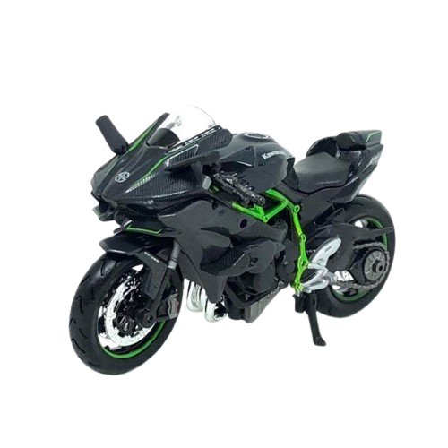

Kawasaki Hyperbike
Um motor de 998 cc com supercharger criado para pista fechada. Mais de 300 cv em uma moto feita para quem busca o limite.
VER FICHA TÉCNICA
Desenvolvido pela Kawasaki com ajuda de outras divisões do grupo KHI, como aeroespacial e turbinas a gás.
É um modelo de pista fechada, sem faróis e sem espelhos, e sai de fábrica com pneus slick.
Entrada de ar grande na frente e aletas que geram downforce, como nas motos de MotoGP.
Sistema Bosch IMU com software de modelagem dinâmica, controle de freio-motor e quickshifter.
Conheça os detalhes oficiais no site da Kawasaki.
SITE DA KAWASAKI